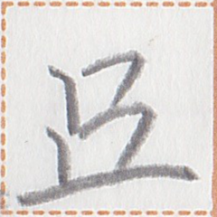
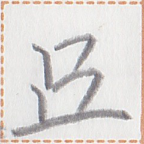

← Previous
Index
Next →
English: There is an accumulation of snow on the road.
Chinese: 路上有积雪。
Chinese (pinyin): Lùshang yǒu jīxuě.
Pekzep (latin transcription): let1 xom1 aim2 ie po1.
Pekzep (hanzi transcription): 雪積在於道。
Pekzep (linzklā):  



Sound:
Analysis: